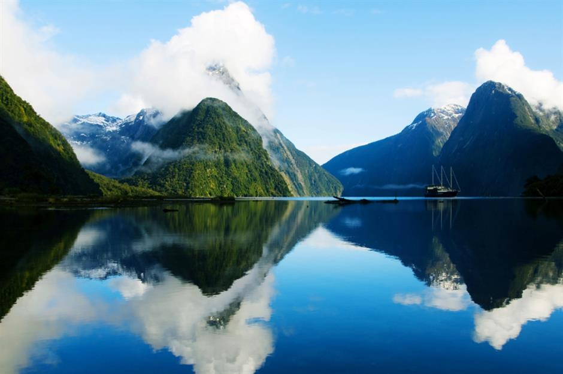
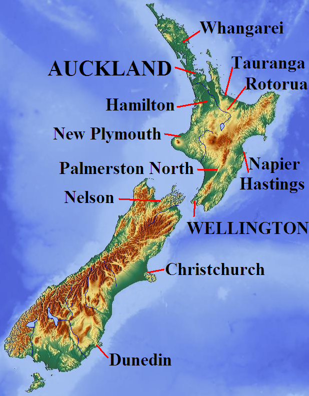

NEW ZEALAND

New Zealand is an island country in the southwest Pacific. New Zealand is home to hundreds of native birds that thrived on the islands for millennia. Discovered by the Dutch and colonized by the British, New Zealand is renowned for its scenic views and beautiful wildlife. Some landmarks of New Zealand are Hobbiton, built for the lord of the Rings, Mt. Egmont, a stunning volcano in the North Island, Milford Sound, one of the natural wonders of the world, and many others. You will get to see those and much more in our Image Gallery. Learn more about the beautiful country of New Zealand on our New Zealand page.

About Me
My name is Charlie Murray and I am a 8th grader at Eastside Prep in Washington State. I love soccer and spending time with my family. I am a New Zealand citizen and love visiting as much as I can. My Dad was born there and we have a lot of family. Truly it is one of my favorite places in the world. I hope that this website can convince you to maybe take a visit or just make you love it just as much as I do.
Please enjoy this website as it took a lot of work and I have learned a lot from this. Mrs. Hollingshead, please please please give me a good grade!